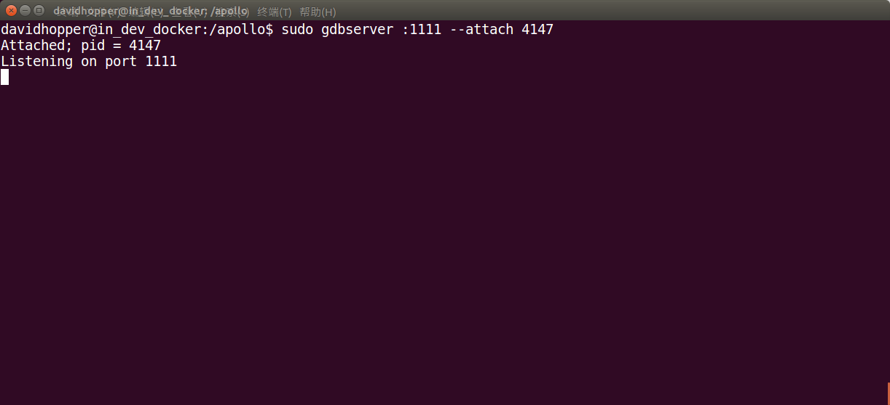

How to Build and Debug using VSCode#
Visual Studio Code (hereafter referred to as VSCode) is Microsoft's first lightweight code editor for Linux. Find below a few configuration files that allow the use of VSCode to compile and debug the Apollo project. I will elaborate on it below, hoping to bring some help to the developers.
Compile the Apollo project using VSCode#
You could first set up the Apollo project using the build and release document under Build in Visual Studio Code. Only follow the steps until the Build the Apollo Project in VSCode title
Configuration file parsing#
There are a total of four common tasks in the .vscode/tasks.json file: Build the apollo project, Run all unit tests for the apollo project, Code style check for the apollo project, Clean the apollo project. The first task is the default generation task, you can directly press the shortcut key Ctr+Shift+B to call, other tasks can be executed by executing the menu command: Task->Run Task (R)....
In the pop-up window, select the corresponding The options are as shown below:
The following is the specific configuration code, please refer to the comments inside to adjust the compilation task to meet your build needs:
{
"version": "2.0.0",
"tasks": [
{
"label": "build the apollo project",
"type": "shell",
// The compilation task can be adjusted according to the options provided by "apollo.sh", for example: build_gpu
"command": "bash apollo_docker.sh build",
"group": {
"kind": "build",
"isDefault": true // default building task invoked by "Ctrl+Shift+B"
},
// format the error message
"problemMatcher": {
"owner": "cc",
"fileLocation": [
"relative",
"${workspaceFolder}"
],
"pattern": {
"regexp": "^(.*):(\\d+):(\\d+):\\s+(warning|error):\\s+(.*)$",
"file": 1,
"line": 2,
"column": 3,
"severity": 4,
"message": 5
}
}
},
{
"label": "run all unit tests for the apollo project",
"type": "shell",
"command": "bash apollo_docker.sh test",
"problemMatcher": {
"owner": "cc",
"fileLocation": [
"relative",
"${workspaceFolder}"
],
"pattern": {
"regexp": "^(.*):(\\d+):(\\d+):\\s+(warning|error):\\s+(.*)$",
"file": 1,
"line": 2,
"column": 3,
"severity": 4,
"message": 5
}
}
},
{
"label": "code style check for the apollo project",
"type": "shell",
"command": "bash apollo_docker.sh lint",
"problemMatcher": {
"owner": "cc",
"fileLocation": [
"relative",
"${workspaceFolder}"
],
"pattern": {
"regexp": "^(.*):(\\d+):(\\d+):\\s+(warning|error):\\s+(.*)$",
"file": 1,
"line": 2,
"column": 3,
"severity": 4,
"message": 5
}
}
},
{
"label": "clean the apollo project",
"type": "shell",
"command": "bash apollo_docker.sh clean",
"problemMatcher": {
"owner": "cc",
"fileLocation": [
"relative",
"${workspaceFolder}"
],
"pattern": {
"regexp": "^(.*):(\\d+):(\\d+):\\s+(warning|error):\\s+(.*)$",
"file": 1,
"line": 2,
"column": 3,
"severity": 4,
"message": 5
}
}
}
]
}
Possible errors and how to resolve them#
Error: "ERROR: query interrupted" encountered during compilation#
This is due to inconsistencies in the bazel internal cache.
Solution:
Press any key to exit the compilation process. In the command terminal window of VSCode (if it is not open, press the shortcut key Ctrl + ` to open) execute the following command to enter the Docker environment:
bash docker/scripts/dev_into.sh
Enter the following command in the Docker environment to perform the bazel cleanup cache task (must keep the network unblocked in order to successfully download the dependencies, otherwise the command will not work even if it is executed multiple times):
bazel query //...
Finally, enter the exit command to exit the Docker environment and press the shortcut key Ctrl+Shift+B to re-execute the build task.
Staying in the "Building: no action running" interface for a long time during compile time#
This is due to the existence of multiple different versions of Docker or bazel internal cache inconsistency in the current system.
Solution:
Press the shortcut key Ctrl+C to terminate the current build process. In the command terminal window of VSCode (if it is not open, press the shortcut key Ctrl + ` to open), use any of the following methods to stop:
- Stop all current running processes in Docker
bash docker stop $(docker ps -a | grep apollo | awk '{print $1}') - Stop all instances of Docker
bash docker stop $(docker ps -aq) - Execute the VSCode menu command:
Tasks -> Run Tasks (R)... - In the pop-up window, select "clean the apollo project".
- Once complete, press the shortcut key
Ctrl+Shift+Bto rebuild the Apollo project.
Error: "Another command (pid=2466) is running. Waiting for it to complete..." appears at compile time#
This is caused by compiling in other command line terminals or by pressing the Ctrl+C key during the previous compilation, causing the compiling process' execution to only partially complete.
Solution:
Press the shortcut key Ctrl+C to terminate the current build process. In the command terminal window of VSCode (if it is not open, press the shortcut key Ctrl + ` to open it), use the following command to terminate the residual build process:
-
Enter Docker
bash bash docker/scripts/dev_into.sh -
Kill the remaining compilation process in Docker
bash pkill bazel-real -
Check if the bazel-real process remains in the Docker. If yes, press
qto exit and perform step 2 again. Also useps aux | grep bazel-realto view -
Exit Docker using
bash exit -
Press the shortcut key
Ctrl+Shift+Bto re-execute the build task.
Debugging Apollo locally using VSCode#
The Apollo project runs in Docker and cannot be used directly on the host machine. It must be created in Docker with GDBServer. Debug the service process, and then use GDB to connect to the debug service process in Docker on the host machine. The specific operation methods are as follows:
Prerequisites#
The main prerequisites include collecting debugging information and installing the GDBServer if it is not already present in Docker
Collecting debugging information
When compiling Apollo projects, you will need to use debugging information options such as build or build_gpu. Optimization options such as build_opt or build_opt_gpu cannot be used.
Install GDBServer inside Docker
After entering Docker, you can use the following command to view if the GDBServer is present:
gdbserver --version
If the prompt is similar to the following information:
GNU gdbserver (Ubuntu 7.7.1-0ubuntu5~14.04.3) 7.7.1
Copyright (C) 2014 Free Software Foundation, Inc.
gdbserver is free software, covered by the GNU General Public License.
This gdbserver was configured as "x86_64-linux-gnu"
It means that GDBServer has been installed inside Docker. You should be able to view the prompt below. But if the GDBServer is not present and if you are prompted with the following information:
bash: gdbserver: command not found
Then you would need to install the GDBServer using
sudo apt-get install gdbserver
Docker Internal Operations#
Start the Dreamview daemon
Go to Docker and start Dreamview. The command is as follows:
cd into your_apollo_project_root_dir
# If Docker is not started, start it first, otherwise ignore this step
Bash docker/scripts/dev_start.sh -C
# Enter Docker
Bash docker/scripts/dev_into.sh
# Start Dreamview background service
Bash scripts/bootstrap.sh
Start the module that needs debugging
Start the module to be debugged, either by using the command line or by using the Dreamview interface. The following is an example of debugging the Planning module from the Dreamview interface. Open Chrome browser, enter the URL: http://localhost:8888/, open the Dreamview interface, open the SimControl option, as shown below:

Click on the Module Controler tab on the left toolbar and select the "Routing" and Planning options as shown below:

Click the Default Routing tab on the left toolbar, select Route: Reverse Early Change Lane or any of these options, send a Routing Request request, and generate a global navigation path, as shown below:
Viewing the "Planning" Process ID
Use the following command to view the "Planning" process ID:
ps aux | grep mainboard | grep planning
The result in the following figure is similar to the previous figure, you can see that the Planning process ID is 4147.

Debugging Planning module using GDBServer
Next we need to carry out our key operations, using GDBServer to additionally debug the Planning process, the command is as follows:
sudo gdbserver :1111 --attach 4147
In the above command, ":1111" indicates that the debugging service process with the port "1111" is enabled, and "4147" indicates the "Planning" process ID. If the result is as shown below, the operation is successful.

After restarting a command terminal and entering Docker, use the following command to see that the "gdbserver" process is running normally:
ps aux | grep gdbserver

Starting GDBServer with a Script File
There are two script files: scripts/start_gdb_server.sh which is used to start GDBServer inside Docker and docker/scripts/dev_start_gdb_server.sh which starts GDBServer directly on the host (outside Docker). Suppose the debugging planning module, the port number is 1111, and the usage of scripts/start_gdb_server.sh is:
# Enter Docker
Bash docker/scripts/dev_into.sh
# Start the gdbserver
Bash scripts/start_gdb_server.sh planning 1111
Assuming that while debugging the planning module, the port number is 1111, the usage of docker/scripts/dev_start_gdb_server.sh is:
# Start gdbserver directly on the host machine (outside Docker)
bash docker/scripts/dev_start_gdb_server.sh planning 1111
Configure the VSCode file#
Configuration is necessary so that the shortcut can be activated by pressing the shortcut key "F5" in VSCode. The contents of start_gdb_server.sh are as follows:
#!/usr/bin/env bash
function print_usage() {
RED='\033[0;31m'
BLUE='\033[0;34m'
BOLD='\033[1m'
NONE='\033[0m'
echo -e "\n${RED}Usage${NONE}:
.${BOLD}/start_gdb_server.sh${NONE} MODULE_NAME PORT_NUMBER"
echo -e "${RED}MODULE_NAME${NONE}:
${BLUE}planning${NONE}: debug the planning module.
${BLUE}control${NONE}: debug the control module.
${BLUE}routing${NONE}: debug the routing module.
..., and so on."
echo -e "${RED}PORT_NUMBER${NONE}:
${NONE}a port number, such as '1111'."
}
if [ $# -lt 2 ];then
print_usage
exit 1
fi
DIR="$( cd "$( dirname "${BASH_SOURCE[0]}" )" && pwd )"
source "${DIR}/apollo_base.sh"
MODULE_NAME=$1
PORT_NUM=$2
shift 2
# If there is a gdbserver process running, stop it first.
GDBSERVER_NUMS=$(pgrep -c -x "gdbserver")
if [ ${GDBSERVER_NUMS} -ne 0 ]; then
sudo pkill -SIGKILL -f "gdbserver"
fi
echo ${MODULE_NAME}
# Because the "grep ${MODULE_NAME}" always generates a process with the name of
# "${MODULE_NAME}", I added another grep to remove grep itself from the output.
PROCESS_ID=$(ps -ef | grep "mainboard" | grep "${MODULE_NAME}" | grep -v "grep" | awk '{print $2}')
echo ${PROCESS_ID}
# If the moudle is not started, start it first.
if [ -z ${PROCESS_ID} ]; then
#echo "The '${MODULE_NAME}' module is not started, please start it in the dreamview first. "
#exit 1
# run function from apollo_base.sh
# run command_name module_name
run ${MODULE_NAME} "$@"
PROCESS_ID=$(ps -ef | grep "mainboard" | grep "${MODULE_NAME}" | grep -v "grep" | awk '{print $2}')
echo ${PROCESS_ID}
fi
sudo gdbserver :${PORT_NUM} --attach ${PROCESS_ID}
The contents of dev_start_gdb_server.sh are as follows:
#!/usr/bin/env bash
function check_docker_open() {
docker ps --format "{{.Names}}" | grep apollo_dev 1>/dev/null 2>&1
if [ $? != 0 ]; then
echo "The docker is not started, please start it first. "
exit 1
fi
}
function print_usage() {
RED='\033[0;31m'
BLUE='\033[0;34m'
BOLD='\033[1m'
NONE='\033[0m'
echo -e "\n${RED}Usage${NONE}:
.${BOLD}/dev_debug_server.sh${NONE} MODULE_NAME PORT_NUMBER"
echo -e "${RED}MODULE_NAME${NONE}:
${BLUE}planning${NONE}: debug the planning module.
${BLUE}control${NONE}: debug the control module.
${BLUE}routing${NONE}: debug the routing module.
..., and so on."
echo -e "${RED}PORT_NUMBER${NONE}:
${NONE}a port number, such as '1111'."
}
if [ $# -lt 2 ];then
print_usage
exit 1
fi
check_docker_open
DIR="$( cd "$( dirname "${BASH_SOURCE[0]}" )" && pwd )"
cd "${DIR}/../.."
# pwd
xhost +local:root 1>/dev/null 2>&1
#echo $@
docker exec \
-u $USER \
-it apollo_dev \
/bin/bash scripts/start_gdb_server.sh $@
xhost -local:root 1>/dev/null 2>&1
Internal operations of VSCode on the host#
Use VSCode on the host to open the Apollo project (must be the version you just built), open the file you need to debug, set a breakpoint at the specified location, and press F5 to start debugging.
Note: Since VSCode is written in a scripting language, the boot process will be slower. If the Internet speed is not fast enough, even a one-minute wait may be possible. The debugging method is similar to Visual Studio and will not be described here. As shown below:
Configuration File Resolution#
The .vscode/launch.json file is configured to connect to the debug service process in Docker in VSCode. In addition, in order to start GDBServer directly in VSCode, a pre-debug startup task was added to the .vscode/launch.json file: "preLaunchTask": "start gdbserver", which corresponds to the .vscode/tasks.json file. One of the tasks, is used to start the GDBServer. The configuration of the .vscode/launch.json file is as follows
{
"version": "0.2.0",
"configurations": [
{
"name": "C++ Launch",
"type": "cppdbg",
"request": "launch",
"program": "${workspaceRoot}/bazel-bin/cyber/mainboard",
// You can change "localhost:1111" to another "IP:port" name, but it
// should be same as those in gdbserver of the docker container.
"miDebuggerServerAddress": "localhost:1111",
// You can set the name of the module to be debugged in the
// ".vscode/tasks.json" file, for example "planning".
// Tips: search the label "start gdbserver" in ".vscode/tasks.json".
// The port number should be consistent with this file.
"preLaunchTask": "start gdbserver",
"args": [],
"stopAtEntry": false,
"cwd": "${workspaceRoot}",
"environment": [],
"externalConsole": true,
"linux": {
"MIMode": "gdb"
},
"osx": {
"MIMode": "gdb"
},
"windows": {
"MIMode": "gdb"
}
}
]
}
The task for starting GDBServer in the .vscode/tasks.json file is configured as follows:
{
"label": "start gdbserver",
"type": "shell",
// you can change the "planning" module name to another one and
// change the "1111" to another port number. The port number should
// be same as that in the "launch.json" file.
"command": "bash docker/scripts/dev_start_gdb_server.sh planning 1111",
"isBackground": true,
"problemMatcher": {
"owner": "custom",
"pattern": {
"regexp": "__________"
},
"background": {
"activeOnStart": true,
// Don't change the following two lines, otherwise the
// gdbserver can't run in the background.
"beginsPattern": "^Listening on port$",
"endsPattern": "^$"
}
}
}
Possible Errors and their Solutions#
During the debugging process, you may encounter the following problems:
The Docker internal debugging process crashes and cannot be debugged in VSCode
Solution
The solution is to restart the debugging process inside Docker.
the network connection is not smooth, can not be debugged in VSCode
Solution
The solution is to ensure the network is smooth, and disable the agent tool
Once debugging is complete, the debugging service process inside Docker shuts down
It may happen that the debugging service mileage cannot be started again in VSCode.
Solution
The solution is to restart the debugging service process inside Docker, and then in VSCode. Press “F5” to start debugging.
Remote debugging using VSCode#
During the R&D process, we also need to remotely debug the Apollo project on the industrial computer inside the vehicle, that is, connect the in-vehicle industrial computer with the SSH service on the debugging computer, start the relevant process in the industrial computer, and then perform remote debugging on the debugging computer. The following is an example of debugging the planning module:
View the IP address of the industrial computer in the car#
On the industrial computer in the car, check the IP of the machine by the following command:
ifconfig
Open Dreamview in the browser of the debugging computer and start the module to be debugged#
Assuming that the IP address of the industrial computer LAN is: 192.168.3.137, open your Chrome or Firefox browser, enter the following URL: http://192.168.3.137:8888/, start the module (Planning) to be debugged as shown in Start the module that needs debugging section

Use the SSH Command to Remotely Log In to the Industrial PC and Start the Gdbserver Service of the Industrial PC#
Assume that the user name of the industrial computer in the car is xxxxx, and the IP address of the LAN is 192.168.3.137. Use the following command to remotely log in to the industrial computer:
ssh xxxxx@192.168.3.137
After successfully entering the IPC, assume that the Planning module needs to be debugged, and the port number is 1111, use the following command to start the gdbserver service of the in-vehicle IPC:
# Switch to the Apollo project root directory on the industrial computer
cd ~/code/apollo
# Start the gdbserver service outside of Docker
bash docker/scripts/dev_start_gdb_server.sh planning 1111
As shown in the figure below, if you see a prompt similar to Listening on port 1111, the gdbserver service starts successfully.

Using the VSCode remote debugging on the debugging computer, the planning module on the industrial computer#
Open the Apollo project using VSCode on the debug computer. Note that the project version should be the same as the version on the industrial computer, otherwise many inconsistencies will be output when debugging. First, the pre-debug load task in the configuration file .vscode/launch.json: "preLaunchTask": "start gdbserver", comment out, and then modify the remote debug service address to: "miDebuggerServerAddress": "192.168.3.137:1111" ,,As shown below:
Set the breakpoint at the desired location, press F5 to start debugging, because it is a remote connection, the startup wait time will be longer, even more than 1 minute. The figure below is the remote debugging interface.
Note: Every time you start debugging in VSCode, you need to start the debugging operation again in the command line terminal, and restart the gdbserver service process in the industrial computer.
You can omit this step if you have configured a preLaunchTask task.